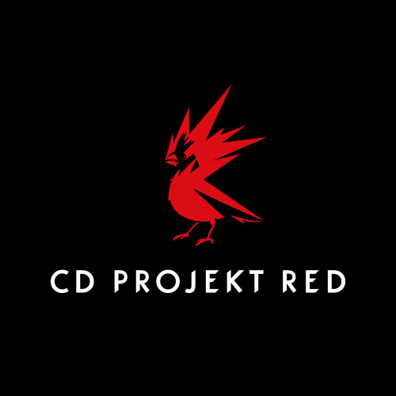

Présentation

CD Projekt est un développeur et éditeur polonais de jeux vidéo. L'entreprise est fondée en mai 1994 par Marcin Iwiński et Michał Kiciński dans le but de publier des logiciels sur CD-ROM. Le studio, grâce à sa division de développement de jeu CD Projekt Red, est principalement connu pour sa saga The Witcher et Cyberpunk 2077.